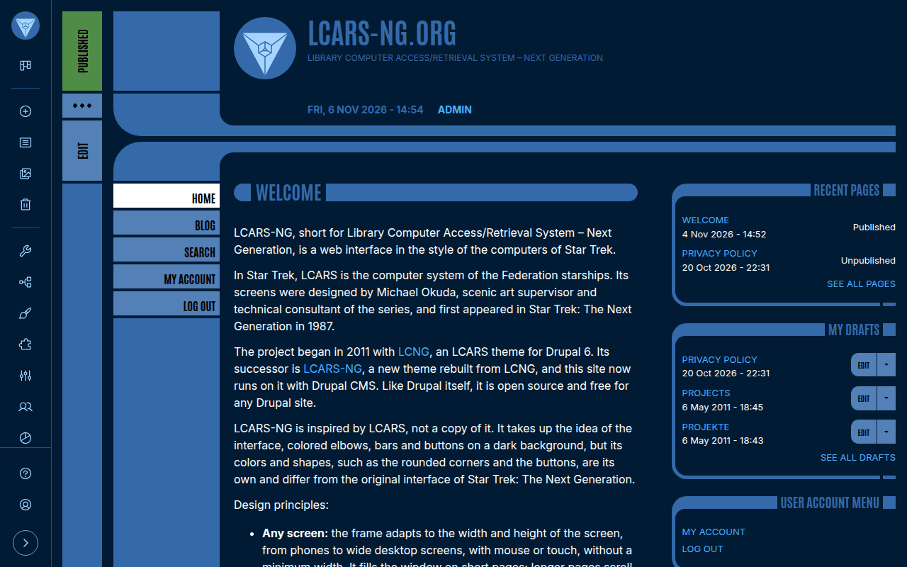
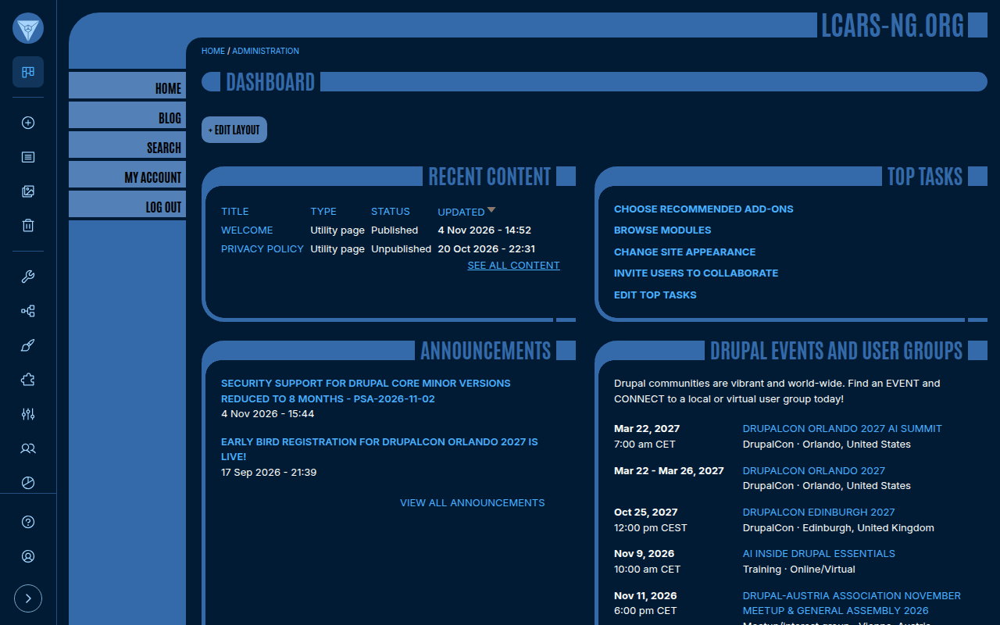
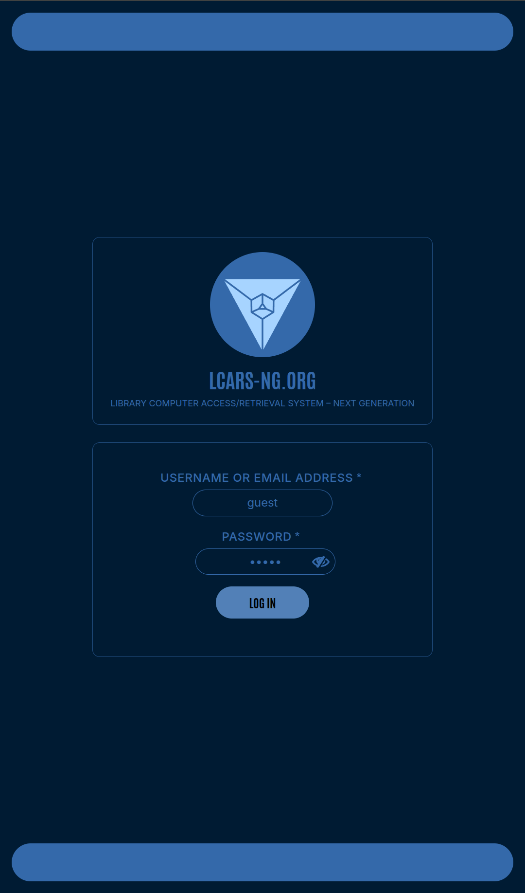
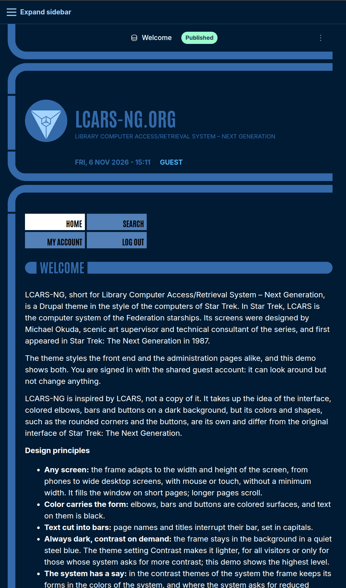

Overview
LCARS-NG is a theme for Drupal inspired by Michael Okuda's LCARS interface from Star Trek: The Next Generation: rounded elbows, colored bars and buttons on a dark background. It takes up the idea of the interface, but its colors and shapes are its own.
It works as front-end theme and as administration theme, on any screen from phones to wide desktop screens, and requires no modules outside of Drupal core.
The login form of the demo shows the credentials of a read-only guest account, which also opens the administration pages.
Screenshots








The frame adapts to the width and height of the screen. On pages up to 1080 pixels wide, as on phones, tablets and a full HD screen in portrait, only an edge of the frame remains on the left, and the menus stand above the content as a grid of buttons.
Features
Any screen
From phones to wide desktop screens, for mouse and touch. The frame fills the window on short pages, longer pages scroll.
Front end and admin
Also styles Dashboard, Project Browser, Layout Builder and CKEditor 5, and shows the events of Drupical as an agenda.
Contrast
Standard, Medium and High, or as the system asks. Follows the contrast themes of Windows and reduced motion.
Own typefaces
The narrow Antonio for bars, buttons and menus, Inter for the text, served with the theme. It looks the same in every supported browser.
No build step
Twig, CSS Grid and custom properties; the CSS is served as it is in the repository. One small script sets the corners of boxes; without JavaScript everything stays usable.
Red alert
Red alert on the pages for access denied, yellow alert on the page not found. A login panel for the account pages.
Installation
Install as any contributed Drupal theme:
composer require drupal/lcars_ng
drush theme:install lcars_ng
drush config:set system.theme default lcars_ngTo use it for the administration pages as well, select it as administration theme under Appearance. Its settings are under Appearance > Settings > LCARS-NG. Bug reports and feature suggestions go to the issue queue on drupal.org.
History
The project began in 2011 with LCNG, an LCARS theme for Drupal 6. LCARS-NG rebuilds it on current techniques for Drupal 11 and keeps its logo: an icosahedron, redrawn as a flat mark.